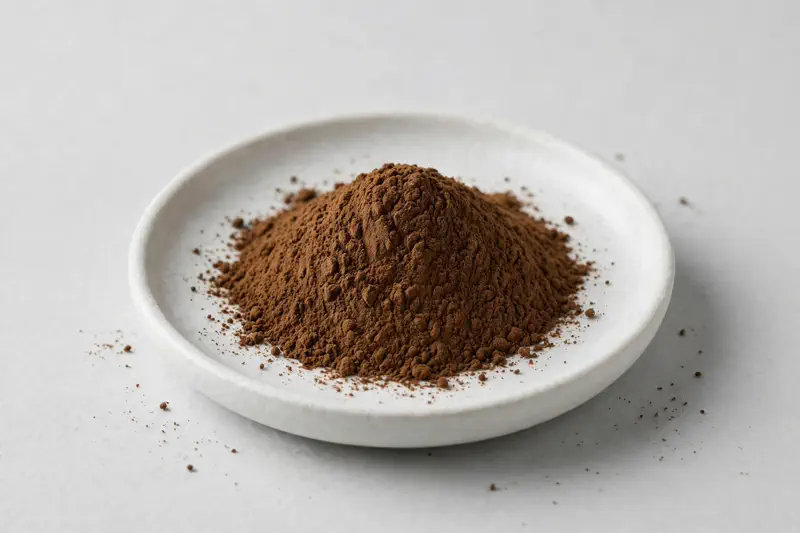

Carob Extract — a pod-derived botanical positioned for cocoa-alternative and natural-sweetness formulations.

Overview
Carob extract comes from the dried pods of Ceratonia siliqua and is chosen by formulators for its natural sweetness and its ability to replace cocoa in certain applications. Buyers commonly request 4:1 and 10:1 powdered grades for food, beverage and supplement use. Demand is steady as brands look for caffeine-free and naturally sweet botanical inputs. As a Xi'an-based trading company sourcing through vetted partner producers, we work against your target specification.
Specifications below reflect commonly requested options in the market — not a stock list. Share your target spec and we'll confirm exactly what we can supply, honestly.
| Specification | Details |
|---|---|
| Botanical identity | Ceratonia siliqua pod extract powder |
| Source material | Dried pods |
| Marker compound | Commonly requested spec grades: 4:1 and 10:1 powdered extracts |
| Appearance | Medium-dark brown fine powder |
| Mesh size | Typically 80–100 mesh (confirm per inquiry) |
| Testing | COA/TDS arranged on request; scope agreed per your spec |
Applications
Documentation
We don't claim in-house labs or certifications we don't hold. COA and TDS documents can be arranged on request, and testing scope is agreed against your specification before supply.
FAQ
Related products
Arctium lappa
Key marker: 10:1 or inulin
View specs →Camellia sinensis (white tea)
Key marker: Tea polyphenols 20-40%
View specs →Garcinia cambogia
Key marker: HCA 50-60%
View specs →Syzygium aromaticum
Key marker: eugenol 5-10%
View specs →Ocimum basilicum
Key marker: 10:1 / ursolic acid
View specs →Buyer guides
Buyer’s guide
Identity, actives, heavy metals, micro — what each section of a Certificate of Analysis means, and the red flags that tell you to walk away.
Read the guide →Buyer’s guide
Section-by-section COA walkthrough — marker assays, heavy metals, micro panels, red flags, and a buyer checklist.
Read the guide →Send your target spec and volumes — we'll respond with a tailored quotation.
Request a Quote